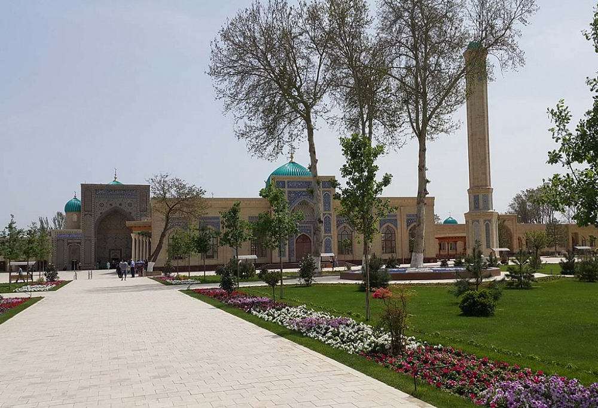

Tashkent City
Tashkent is the capital and largest city of Uzbekistan, as well as the most populated city in ex-Soviet Central Asia (though the larger urban centers of Urumqi in China and Kabul in Afghanistan lie well within the geographic region of Central Asia) with a population in 2018 of 2,485,900. It is located in the north-east of the country close to the Kazakhstan border. Tashkent was influenced by the Sogdian and Turkic cultures in its early history, before Islam in the 8th century AD. After its destruction by Genghis Khan in 1219, the city was rebuilt and profited from the Silk Road. From 18th to 19th century, the city became an independent city-state, before being re-conquered by the Khanate of Kokand. In 1865, it fell to the Russian Empire, and became the capital of Russian Turkestan. In Soviet times, Tashkent witnessed major growth and demographic changes due to forced deportations from throughout the Soviet Union. Today, as the capital of an independent Uzbekistan, Tashkent retains a multi-ethnic population, with ethnic Uzbeks as the majority. In 2009, the city celebrated its 2,200 years of written history. read more
Bukhara City
Chorsu Bazaar is located across the street from Chorsu Station of the Tashkent Metro, near Kukeldosh Madrasah. "Chorsu" is a word from the Persian language, meaning "crossroads" or "four streams". Kukeldash Madrasah, built around 1570, is located at the edge of the bazaar. Bazaar is the heart of every oriental city, the center of public life, breadwinner of the whole city. Since the dawn of time bazaars appeared on the intersections of trade roads, on big squares of cities. They played role of main places of the city, where merchants, traders and common people gathered to discuss important news, to know prices, to have a rest in cozy choykhana (Uzbek café) eating pilaf and drinking green tea. Also bazaars were the places of main entertaining events of the city – theatrical performances. Tashkent Bazaar Chorsu, the age of which is more than hundred years, also was always located on the main square of the city Eski-Juva. Old bazaar constructions destroyed and went bad, but the traditional architecture remained unchanged – domed large premises. This was the only way to protect oneself from heat and dust in terms of hot and dry Asian climate.
Samarkand City
The inner yard Kukeldash Madrasah is a medieval madrasa in Tashkent, located close to Chorsu Bazaar and Chorsu Metro station. It was built around 1570 by the Shaybanid Dynasty of rulers. The madrasah is built of yellow brick, and has a traditional square shape with a big portal and an inner yard. The walls around the inner yard contain cells inhabited by the students. The portal is 20 metres (66 ft) high and contains two towers at its sides. In 1830-1831 the first floor of the madrasah was demolished, and the bricks were used to build the nearby Beklarbegi Madrasah. It was later restored.[1] The madrasah was damaged by the earthquake in 1868 and subsequently reconstructed in 1902-1903. It was reconstructed again in the 1950s and became one of only several religious buildings which survived the 1966 Tashkent earthquake. The madrasah was converted into a caravanserai in the 18th century, then it served as a fortress. In the 20th century it was a museum, first of atheism, and later of folk music. In the 1990s, the building was made a madrasah again. Like any other madrasah Kukeldash Madrasah was an educational institution. However, over the centuries Kukeldash Madrasah fell to decay not once. Throughout its long history the madrasah had rough time.
Tashkent TV Tower
The Tashkent Television Tower (Uzbek: Toshkent Teleminorasi) is a 375-metre-high (1,230 ft) tower, located in Tashkent, Uzbekistan and is the 11th tallest tower in the world. Construction started in 1978 and it began operation 6 years later, on 15 January 1985. It was the 3rd tallest tower in the world from 1985 to 1991. Moreover, the decision of construction Tashkent Tower or TV-Tower of Uzbekistan was decided in 1971 in 1 September in order to spread the TV and radio signals to all over the Uzbekistan. It is of a vertical cantilever structure, and is constructed out of steel. Its architectural design is a product of the Terxiev, Tsarucov & Semashko firm. The tower has an observation deck located 97 metres (318 ft) above the ground. It is second tallest structure in Central Asia after Ekibastuz GRES-2 Power Station in Ekibastuz, Kazakhstan. It also belongs to the World Federation of Great Towers. The TV Tower is the highest construction in the Central Asia. It has an overall height of 375 meters. Its construction began in 1979 and was completed in 1981. The unique project of the tower was created by architects D.J. Semashko, N.G. Terziev-Tzarukova, engineers E.P. Morozova, M.D. Musheeva. Its construction incorporates an ability to withstand Richter magnitude 9 earthquake.
Tashkent Zoo
With over 500 different species to discover, a visit to Tashkent Zoo is the perfect day out for people of all ages. Opened in 1924, the Tashkent Zoo is the Central Asia’s oldest scientific zoo. Today it houses over 500 different species of animal and is the only zoo in Tashkent where you can experience big animals such as gorillas and giraffes. Explore the African exhibit where you can come face to face with some of Africa’s most unusual animals including zebras and hunting dogs, or try Climatron sections an exciting walk-through experience. One of the main attractions of the Tashkent Zoo is ”Aquarium,” the only one in Central Asia, which includes not only freshwater and marine animal species. With over 22 hectares to explore and incredible animal displays taking place throughout the day (including feeds and keeper talks) no visitor leaves disappointed.Tashkent Zoo was founded in 1924. Then it was a small menagerie which was placed at the Art Museum, on the territory of the former out-of-city dacha of Turkeston governor-general. 3 hectares of land was given to the Zoo. By the end of the 40-ies the Zoo had been almost organized, its collection numbered 200 types of animals.
Amir Temur Museum
After Uzbekistan became independent in 1991, much attention was paid to revive the nation's spiritual and cultural heritage, including recognition of historical persons who had an important role in world civilization. Among those was Amir Temur, the warlord, politician and reformer, patron of science, education, trade, culture and craft. Having established a great centralized state, he strengthened its power and greatness and also united many nations and people. Amir Temur's rule promoted science, education, culture, architecture, the fine arts, music and poetry, laying the foundations of the Temurid Renaissance. President Islam Karimov has encouraged celebration of Timur, linking the Mongol ruler's achievements with the President's own style of governnace.[2][3] Karimov declared 1996 to be the “Year of Amir Temur”, and the 660th anniversary was widely celebrated in Uzbekistan, and the Republic subsequently resolved to build a State Museum in central Tashkent, featuring the Temurids' history.
Museum of History of Uzbekistan

The State Museum of History of Uzbekistan, previously known as the National Museum of Turkestan, was founded in 1876. It is located in Tashkent.Formerly known as the Lenin Museum, the History Museum of Uzbekistan has since been renovated and more exhibits have been added. The highlight of the museum is a very well preserved alabaster Buddha relief found from Fayaz Tepe in Termez. There are numerous fragmentary remains of Buddha heads and decorative motifs found from different sites around Termez. These depict Buddhist art of this region which shows remarkable improvement on the last periods of Gandharan Art undergoing changes with regional affinities.There are also a collection of stone age implements from the cave culture of Uzbekistan. The Muslim section of the museum has a collection of calligraphy and regal edicts from the Tamerlane dynasty to the last emirs of Bukhara. There is a collection of ethnic art and costumes from different parts of Uzbekistan.The collection covers the archaeology, history, numismatics, and ethnography of Uzbekistan.
Tashkent Museum of Railways
Tashkent Museum of Railway Equipment records the history of railways in Uzbekistan. The museum is considered to be the only museum in Uzbekistan devoted to railway expositions. It is open to the public. The museum is located in Tashkent, where most of the railway wagons and trains on display were built. The museum hosts 13 steam engines, 18 diesel and 3 electric locomotives that were used across Uzbekistan to pull different types of wagons - many of which are also on display. The equipment required to operate a railway e.g. signals, semaphore and radio and paraphernalia such as emblems, tools and uniforms of the machinists is included. The oldest example of railway engine that can be seen there is an OV engine 1534 ("The Lamb"), which has 700 horsepower, was made in 1914, and reached a speed of 55 km/h. The most powerful engine presented in the museum is P 36 ("Victory"), which has about 3000 horsepower. The engine was invented in 1833–1834 by Efim and Makar Cherepanovs and was used up to 1956 when replaced with diesel locomotives – the locomotives of 1961 could reach a speed of 60 km/h. The museum offers a ride on one of the oldest trains, along a track that is almost 1 km long, through its grounds.
Zangi-Ota Mausoleum
Memorial complex Zangi-Ota in Tashkent region Mystical charm of the antiquity Only 20 kilometers from the city center along the old road to Samarkand in the eponymous village of Tashkent region there is one of the most interesting istorical and architectural monuments of XIV century - a complex of mausoleums Zangi - Ota. It is the resting place of Sheikh Ai-Hodge (Zangi-Ota), a fifth of the murid of the great Sufi Khoja Ahmad Yassavi and spiritual student of the famous mystic poet Suleiman Khaki-ata Bakyrgani. According to the legend, the saint Zanghi-ota spent his whole life as a shepherd grazing public stage. Moreover, it should be noted that this job was considered completely honorable at that time. He has not only successfully multiplied the major asset and the very basis of existence of their fellows – a herd of cows and sheep, but also he was the spiritual shepherd of the human community – to resolve disputes, comforted the heart, instructed in the faith, healed the sick, and even perform miracles. Anyone familiar with the outstanding monuments of medieval architecture, preserved in Samarkand, Shakhrisabz and Turkestan, visiting the mausoleum Zangi-ota surely recognizes the style of monumental buildings of the epoch of Amir Temur and his dynasty. Visit here for more
Minor Mosque
White mosque of the capital The Minor mosque is one of new sights of Tashkent located in the new part of the city, not far from the UzExpoCentre and Hotel International. It was opened on 1 October 2014, on the eve of the Eid holiday, and has become one of the favorite places of city residents for evening strolls. Minor mosque is located on the embankment of the Ankhor channel and is surrounded by a landscaped area. Minor Mosque, TashkentMinor Mosque, TashkentMinor Mosque, Tashkent Construction of the mosque began in the summer of 2013 and was done in the best traditions of the eastern architecture. At the same time, Minor mosque differs from old brick mosques with its white marble finishing. It shines under the clear sky and its turquoise dome seems to be vanishing in the sky. Its capacity is more than 2400 people. Minor mosque is divided to the open front part with terraces, and big round hall with gold plated mihrab (a semicircular niche in the wall of a mosque that indicates the qibla (the direction of the Kaaba in Mecca and the direction Muslims should face when praying), adorned with writings from Koran.